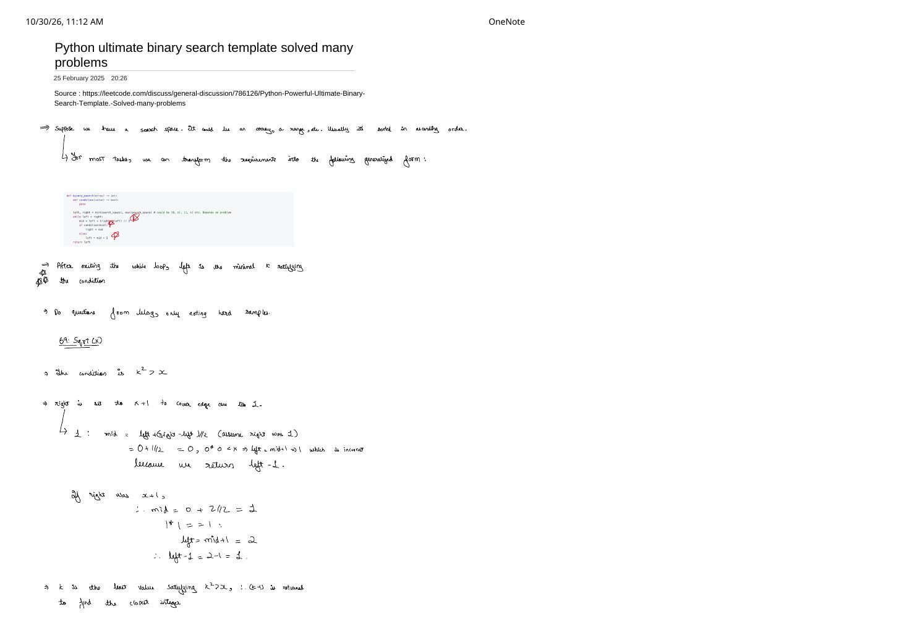
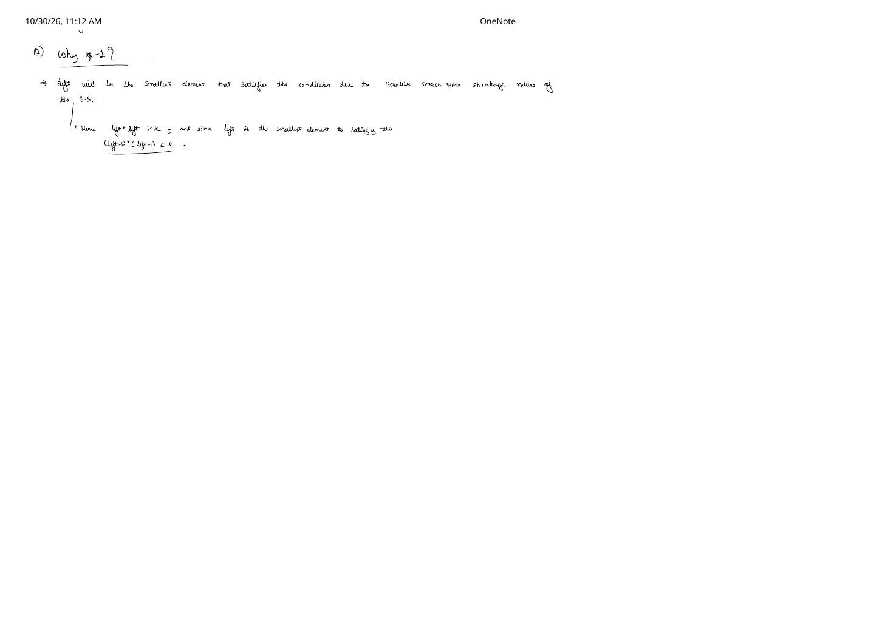

The Ultimate Binary Search Template: Monotonic Predicates & Boundary Invariants
Expanded from handwritten competitive coding study notes (01_Python_ultimate_binary_search_template_solved_many_problems.pdf)
Most off-by-one bugs in binary search come from juggling three different loop styles (left <= right, left < right, left + 1 < right) and guessing whether to return left, right, or mid. Instead of memorizing separate recipes for index lookup, lower bound, upper bound, and parametric optimization, we can cast almost every binary search task into one question: find the minimum value $k$ in a search space for which a monotonic boolean predicate $\text{condition}(k)$ becomes True.
1. Transforming Search Spaces into a Monotonic Predicate
Suppose we have a discrete search space $[L, R]$—an array index range, an integer answer range $[1, n]$, or a capacity interval $[\max(w), \sum w]$—ordered so that once $\text{condition}(k)$ holds for some $k$, it continues to hold for every $k' > k$:
Monotonicity Requirement
A predicate $\text{condition}: [L, R] \to \{\text{False}, \text{True}\}$ is monotonically true-ward if:
Evaluated across $[L, R]$, the predicate produces a clean two-zone step function [F, F, ..., F, T, T, ..., T]. Binary search locates the exact boundary between False and True in $O(\log(R - L + 1))$ predicate evaluations.
while (left < right) loop terminates, left == right lands on the minimal $k$ satisfying condition(k), while left - 1 is the maximal $k$ failing condition(k).2. The Generalized C++ Template
Only three parts ever change from problem to problem: (1) the initial bounds [left, right], (2) the body of condition(mid), and (3) whether the problem asks for left (first True) or left - 1 (last False). Using long long for parametric answer spaces avoids signed 32-bit overflow both when computing left + (right - left) / 2 and inside condition(mid):
#include <functional>
long long first_true(long long left, long long right,
const std::function<bool(long long)>& condition) {
while (left < right) {
long long mid = left + (right - left) / 2;
if (condition(mid)) {
right = mid; // Keep mid in [left, right]
} else {
left = mid + 1; // Discard mid and everything to its left
}
}
return left; // Post-condition: left == right
}3. Why left < right Never Infinite-Loops
Three properties make this template completely immune to infinite loops and off-by-one ambiguity:
- Left-biased midpoint guarantees strict shrinkage: Whenever $\text{left} < \text{right}$, integer floor division gives $\text{left} \le \text{mid} < \text{right}$ (specifically, when $\text{right} = \text{left} + 1$, $\text{mid} = \text{left}$).
- If
condition(mid)isTrue, settingright = midstrictly decreasesright(since $\text{mid} < \text{right}$). - If
condition(mid)isFalse, settingleft = mid + 1strictly increasesleft(since $\text{mid} + 1 > \text{left}$).
- If
- Loop invariant: At the start of every iteration, every $k < \text{left}$ has $\text{condition}(k) = \text{False}$, and if at least one valid value exists in the initial range, $\text{condition}(\text{right}) = \text{True}$ remains preserved.
- Sentinel upper bound when all elements might be
False: If no element in $[L, R_{\text{actual}}]$ satisfies the condition (for example,std::lower_boundwhen target exceeds all array elements), initializing $\text{right} = R_{\text{actual}} + 1$ letsleftsafely converge to the sentinel $R_{\text{actual}} + 1$.
4. Handwritten Case Study: LeetCode 69 — Sqrt(x) & Why left - 1?
Given a non-negative integer $x \ge 0$, compute $\lfloor \sqrt{x} \rfloor$, the largest integer $r$ such that $r^2 \le x$. How do we express "largest integer with $r^2 \le x$" using a first-True template?
Flipping "Maximal False" into "Minimal True"
Define $\text{condition}(k) \equiv (k^2 > x)$. Across $k = 0, 1, 2, \dots$, squares grow monotonically:
- For $k \le \lfloor \sqrt{x} \rfloor$, $k^2 \le x \implies \text{condition}(k) = \text{False}$.
- For $k > \lfloor \sqrt{x} \rfloor$, $k^2 > x \implies \text{condition}(k) = \text{True}$.
Because left converges to the smallest integer $k$ satisfying $k^2 > x$, the integer immediately before it—left - 1—must fail the condition, meaning $(\text{left} - 1)^2 \le x < \text{left}^2$. Therefore $\lfloor \sqrt{x} \rfloor = \text{left} - 1$!
The Crucial Boundary Trap: Why right = x + 1 Instead of right = x?
Our handwritten notes highlight a classic bug on $x = 1$ (and $x = 0$) if you carelessly set left = 0, right = x:
Buggy Bound: right = x Fails on $x = 1$
Suppose $x = 1$ and we initialize left = 0, right = 1:
- Iteration 1: $\text{mid} = 0 + \lfloor (1 - 0)/2 \rfloor = 0$. Since $0^2 = 0 \not> 1$, we take the
elsebranch and setleft = mid + 1 = 1. - Now
left == right == 1, so the loop exits immediately! - Returning
left - 1gives $1 - 1 = 0$, which is wrong ($\lfloor\sqrt{1}\rfloor = 1$).
Root cause: We asked the search to find the first $k$ with $k^2 > 1$, which is $k = 2$. Because $2 \notin [0, 1]$, left got clamped at $1$ instead of reaching $2$!
Corrected Trace with right = x + 1 on $x = 1$ (and $x = 0$)
Set left = 0 and right = (long long)x + 1 so the first $k$ with $k^2 > x$ is guaranteed to lie inside [left, right]:
- For $x = 1$:
[left, right] = [0, 2].
Step 1: $\text{mid} = 0 + 2 // 2 = 1$. Check $1 \cdot 1 > 1$ (False) $\implies \text{left} = \text{mid} + 1 = 2$.
Loop exits with $\text{left} = 2 \implies$ return $\text{left} - 1 = 2 - 1 = \mathbf{1}$. - For $x = 0$:
[left, right] = [0, 1].
Step 1: $\text{mid} = 0$. Check $0 \cdot 0 > 0$ (False) $\implies \text{left} = 1$.
Loop exits with $\text{left} = 1 \implies$ return $\text{left} - 1 = 1 - 1 = \mathbf{0}$.
class Solution {
public:
int mySqrt(int x) {
long long left = 0;
long long right = static_cast<long long>(x) + 1; // Covers x = 0 and x = 1; avoids INT_MAX + 1 overflow
while (left < right) {
long long mid = left + (right - left) / 2;
if (mid * mid > x) {
right = mid;
} else {
left = mid + 1;
}
}
return static_cast<int>(left - 1);
}
};5. Classic Search-on-Answer Problems Using the Exact Same Loop
Once you recognize "minimize $k$ subject to a feasible check" (or "maximize $k$ by finding the first infeasible $k$ and subtracting $1$"), dozens of medium and hard problems collapse to writing a greedy $O(n)$ condition(mid) verifier:
| Problem | Search Space [left, right] |
Monotonic condition(mid) |
Return |
|---|---|---|---|
| LC 278: First Bad Version | [1, n] |
isBadVersion(mid) |
left |
| LC 35: Search Insert Position | [0, n] (note n sentinel!) |
nums[mid] >= target |
left |
| LC 69: Sqrt(x) | [0, (long long)x + 1] |
mid * mid > x |
left - 1 |
| LC 875: Koko Eating Bananas | [1, max(piles)] |
$\sum \lceil \text{pile} / \text{mid} \rceil \le h$ | left |
| LC 1011: Ship Packages in $D$ Days (identical to LC 410 Split Array Largest Sum) |
[max(weights), sum(weights)] |
Greedy days needed with capacity mid $\le D$ |
left |
| LC 1482: Min Days to Make $m$ Bouquets | [min(bloom), max(bloom) + 1] |
Bouquets formed by day mid $\ge m$ |
left > max(bloom) ? -1 : left |
Here is LC 1011 (Capacity To Ship Packages Within $D$ Days) written directly on top of the template—notice that the binary search loop is character-for-character identical:
#include <algorithm>
#include <numeric>
#include <vector>
int shipWithinDays(const std::vector<int>& weights, int days) {
auto feasible = [&](int capacity) -> bool {
int used_days = 1, cur_load = 0;
for (int w : weights) {
if (cur_load + w > capacity) {
++used_days;
cur_load = 0;
}
cur_load += w;
}
return used_days <= days;
};
int left = *std::max_element(weights.begin(), weights.end());
int right = std::accumulate(weights.begin(), weights.end(), 0);
while (left < right) {
int mid = left + (right - left) / 2;
if (feasible(mid)) {
right = mid;
} else {
left = mid + 1;
}
}
return left;
}condition(k) is True, is condition(k + 1) guaranteed True?2. Verify bounds: does
[left, right] include every possible return value—including $R + 1$ when returning left - 1 or detecting "not found"?3. Guard arithmetic: use
left + (right - left) / 2 and long long whenever mid * mid or array sums can exceed $2^{31} - 1$.
From the Handwritten Notes
Expand the original handwritten pages below to inspect the exact derivations, dry runs, and annotations:
View original note — Page 1: Ultimate Binary Search Template & LC 69 Sqrt(x) Boundary Trace


01_Python_ultimate_binary_search_template_solved_many_problems.pdf: generalized Python template and step-by-step proof of why right = x + 1 is required for $x = 1$ in Sqrt(x).View original note — Page 2: Why Return left - 1?


01_Python_ultimate_binary_search_template_solved_many_problems.pdf: search-space shrinkage argument showing $\text{left}^2 > x$ and $(\text{left}-1)^2 \le x$.